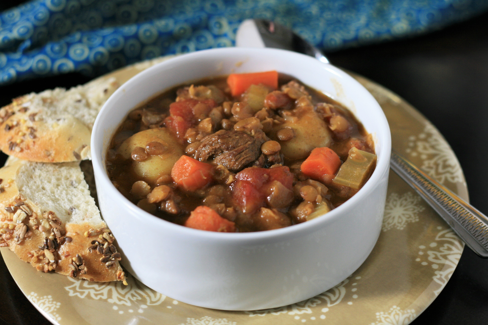

Beef and Lentil Stew

Description
Stewing is suitable for the least tender cuts of meat that become tender and juicy with the slow moist heat method. This makes it popular in low-cost cooking. Cuts having a certain amount of marbling and gelatinous connective tissue give moist, juicy stews, while lean meat may easily become dry.
Stews are thickened by reduction or with flour, either by coating pieces of meat with flour before searing, or by using a roux or beurre manié, a dough consisting of equal parts of fat and flour. Thickeners like cornstarch, potato starch, or arrowroot may also be used.
Ingredients
- 2 tablespoons all-purpose flour
- 1 pound flank steak, cut into 1/2-inch cubes
- 2 tablespoons oil, or more as needed
- 4 carrots, chopped
- 1 onion, diced
- 1 stalk celery, thinly sliced
- 2 cloves garlic, minced
- 1 (14.5 ounce) can diced tomatoes
- 1 cup dry lentils
- 4 cups beef broth
- 2 teaspoons dried rosemary
- 11 ounces baby potatoes with skin
- 1 pinch salt and freshly ground black pepper to taste
Steps
- Pour flour into a shallow bowl and dust steak with flour. Heat oil in a large skillet over high heat and sear beef on all sides until browned, 3 to 5 minutes. Remove from the skillet and set aside.
- Add carrots, onion, celery, and garlic to the skillet and cook until softened, about 5 minutes. Add more oil if necessary.
- Add tomatoes with juice, lentils, beef broth, rosemary, and browned beef pieces to the skillet and stir well. Reduce heat, cover pot halfway with a lid, and simmer for 40 minutes.
- Add potatoes to the skillet. Simmer until lentils and potatoes are soft, about 20 minutes. Season with salt and pepper.